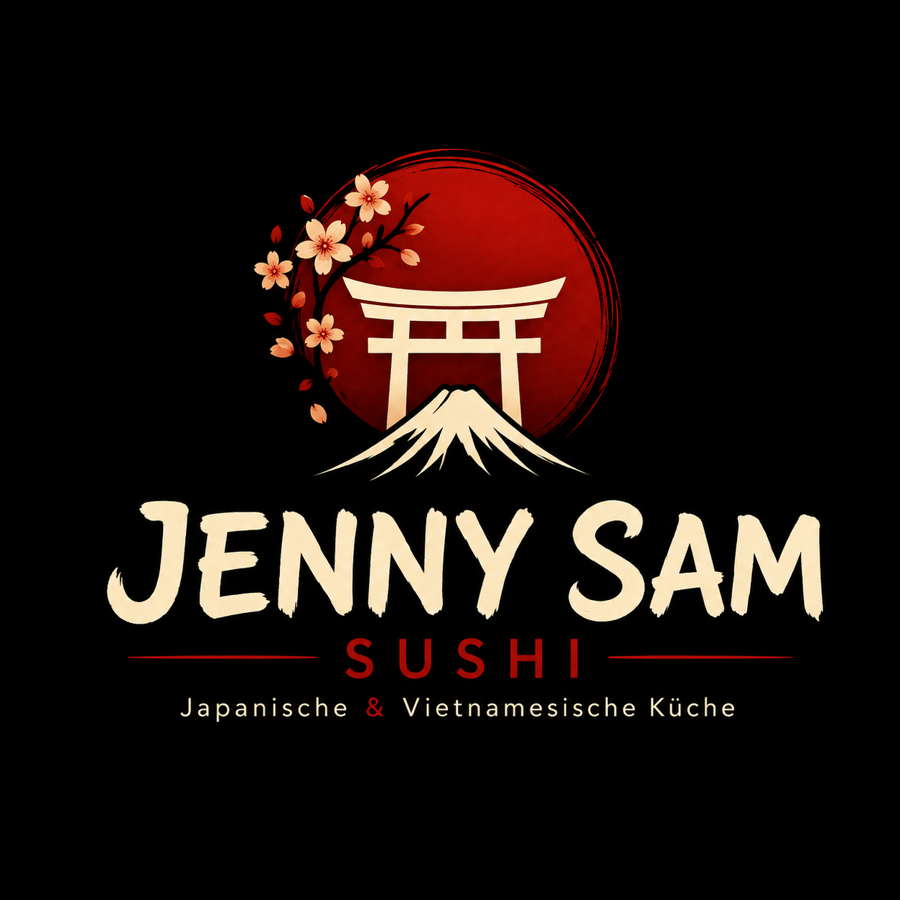
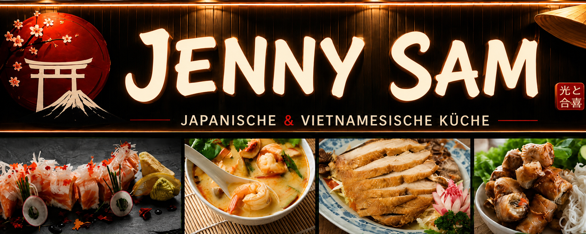

Sushi
Nigiri, Maki und Inside-Out Rolls, frisch gerollt.

JENNY SAM SUSHI
Japanisch · Vietnamesisch · Jüterbog
Frisches Sushi und authentische asiatische Spezialitäten mitten in Jüterbog.
Willkommen bei Jenny Sam
Jenny Sam verbindet japanische Sushi-Kunst mit vertrauten vietnamesischen und asiatischen Gerichten. Wir arbeiten mit frischen Zutaten und bereiten jedes Sushi erst nach Ihrer Bestellung zu.
Unsere Spezialitäten
Nigiri, Maki und Inside-Out Rolls, frisch gerollt.
Flambiert, knusprig und mit unseren Spezial-Soßen.
Pur servierter Fisch für klare, feine Aromen.
Phở, Reisnudeln und aromatische Wokgerichte.
1a Weizengluten
2 Krebstiere/-Erzeugnisse
3 Ei/-Erzeugnisse
4 Fisch/-Erzeugnisse
4a Butterfisch-Hinweis
4b Fischsoße
5 Erdnüsse/-Erzeugnisse
6 Sojabohnen/-Erzeugnisse
7 Milch/-Erzeugnisse
8 Schalenfrüchte
9 Sellerie
10 Senf
11 Sesam
12 Schwefeldioxid/Sulphite
13 Lupinen
14 Weichtiere
Zusatzstoffe: A Antioxidationsmittel · Ch Chinin · F Farbstoff · Fh Feuchthaltemittel · Gv Geschmacksverstärker · K Konservierungsmittel · Ko Koffein · S Säure/Säuerungsmittel · St Stabilisator · Su Süßungsmittel · V Verdickungsmittel. Srm: Surimi enthält 2,6,F,Fh,St. Tbk: Tobiko/Masago enthält 1,4,6,F.
Galerie
Tisch reservieren
Ihre Anfrage wird direkt als WhatsApp-Nachricht an uns vorbereitet.
Kontakt & Anfahrt
03372 4423033
+49 1575 2418921
anhdungle2982@gmail.com
Öffnungszeiten
Montag: Ruhetag
Dienstag bis Sonntag: 10:30–21:00 Uhr